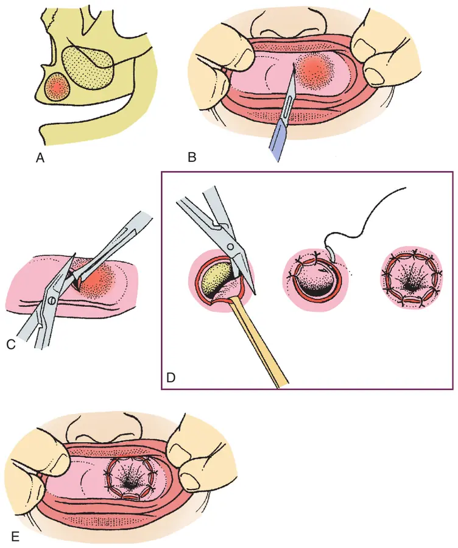
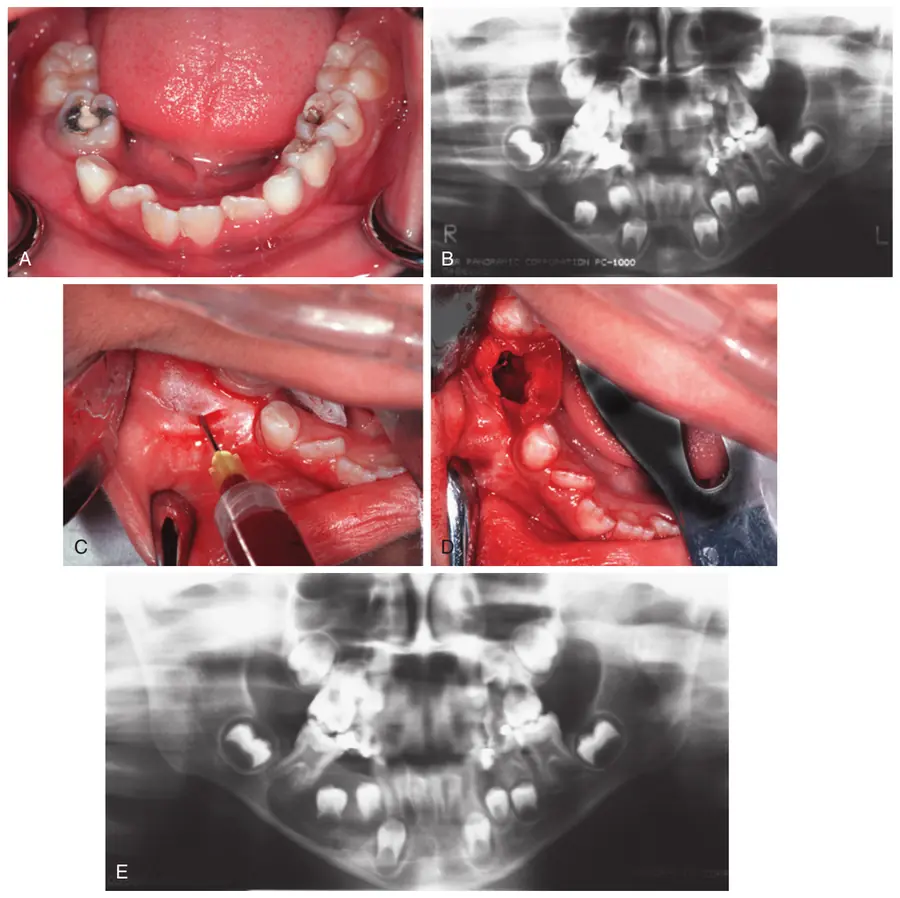

نسخه استخراجشده؛ ترجمه یا تأیید علمی انجام نشده است. وضعیت: captured
سه نام برای یک کار: مارسوپیالیزاسیون، دکمپرسیون، و عمل پارچ همگی به یک چیز اشاره دارند: ایجاد یک پنجرهی جراحی در دیوارهی کیست، تخلیهی محتویات کیست، و حفظ پیوستگی میان کیست و حفرهی دهان، سینوس ماگزیلا، یا حفرهی بینی.

تنها بخشی از کیست که برداشته میشود، همان تکهی پنجره است و باقی پوشش در جای خود میماند. همین کار فشار داخل کیست را کم میکند و کوچک شدن کیست و پُر شدن استخوان را پیش میبرد — نام «دکمپرسیون» از همینجاست.
و یک نکتهی راهبردی: مارسوپیالیزاسیون میتواند درمان یگانهی یک کیست باشد، یا گامی مقدماتی در مدیریت — با انوکلئاسیونی که به بعد موکول میشود.
پنج عاملی که پیش از تصمیم باید سنجیده شوند:
دو مزیت: مزیت اصلی این است که عملی ساده برای انجام دادن است، و مارسوپیالیزاسیون میتواند ساختارهای حیاتی را از آسیبی که انوکلئاسیون فوری میساخت، در امان نگه دارد.
عیب بزرگ — و جدیترین نکتهی این درس: عیب عمدهی مارسوپیالیزاسیون این است که بافت پاتولوژیک در جای خود باقی میماند، بدون معاینهی بافتشناختی کامل.

اگرچه بافت گرفتهشده در پنجره میتواند برای معاینهی پاتولوژیک ارسال شود، ضایعهی مهاجمتری ممکن است در بافت باقیمانده حضور داشته باشد.
و عیب دوم — بهایی که بیمار میپردازد: حفرهی کیستیک باید تمیز نگه داشته شود تا از عفونت پیشگیری شود، چون باقیماندهی غذا اغلب در حفره گیر میکند. در بیشتر موارد یعنی بیمار باید حفره را چند بار در روز با سرنگ شستوشو دهد — و این میتواند چندین ماه ادامه یابد، بسته به اندازهی حفره و سرعت پُر شدن استخوان.
تکنیک — گام به گام:
و یک هشدار حین عمل که نباید از دست بدهی: نواحی زخم یا ضخیم شدن دیوارهی کیست باید درمانگر را به احتمال تغییرات دیسپلاستیک یا نئوپلاستیک در دیوارهی کیست هشیار کند. در این حالت، انوکلئاسیون کل کیست یا بیوپسی برشی از ناحیه یا نواحی مشکوک باید انجام شود.
و نگه داشتن پنجره باز — با یک عدد کلیدی:
در فک بالا، درمانگر دو انتخاب دارد که کیست را به کجا باز کند: (۱) به حفرهی دهان، یا (۲) به سینوس ماگزیلا یا حفرهی بینی. در کیستی که بخش بزرگی از ماگزیلا را نابود کرده، پس از ساختن پنجره یک سقفبرداری دوم میتواند بهطور وسیع به آنتروم یا حفرهی بینی مجاور انجام شود — و آنگاه دهانهی دهانی بسته میشود، و پوشش کیستیک با پوشش آنتروم یا بینی پیوسته میگردد.
و یک واقعیت مهم دربارهی جایگاه این روش: مارسوپیالیزاسیون بهندرت بهعنوان تنها شکل درمان کیستها به کار میرود؛ در بیشتر موارد، انوکلئاسیون پس از مارسوپیالیزاسیون انجام میشود.
دو استثنا: در مورد کیست دنتیجروس، ممکن است پس از رویش دندان به قوس، هیچ کیست باقیماندهای برای برداشتن وجود نداشته باشد، و اگر جراحی بیشتر بهعلت مشکلات پزشکی همزمان منع دارد، مارسوپیالیزاسیون میتواند بدون انوکلئاسیون آینده انجام شود.
مرحلهی دوم — انوکلئاسیون پس از مارسوپیالیزاسیون: ترمیم اولیه پس از مارسوپیالیزاسیون سریع است، ولی اندازهی حفره ممکن است پس از نقطهای بهطور محسوس کم نشود. در این زمان، اهداف مارسوپیالیزاسیون به دست آمدهاند و انوکلئاسیون ثانویه میتواند بدون آسیب به ساختارهای مجاور انجام شود. رویکرد ترکیبی، عوارض را کم و ترمیم کامل نقص را تسریع میکند.
و زمان مناسب انوکلئاسیون: وقتی استخوان ساختارهای حیاتی مجاور را پوشانده — که از آسیبشان حین انوکلئاسیون جلوگیری میکند — و وقتی پُر شدن کافی استخوان، قدرت کافی به فک داده تا از شکستگی حین انوکلئاسیون پیشگیری شود.
و یک نکتهی تکنیکی ظریف: پس از مارسوپیالیزاسیون، کیست پوشش اپیتلیال مشترکی با حفرهی دهان دارد. پنجرهی اولیه پل اپیتلیالی میان حفرهی کیستیک و حفرهی دهان را دربر دارد — و این اپیتلیوم باید کاملاً همراه پوشش کیستیک برداشته شود؛ برشی بیضوی که کاملاً پنجره را دور بزند باید تا استخوان سالم زده شود. مزیت دیگرش: ضخیم شدن پوشش کیستیک، انوکلئاسیون ثانویه را آسانتر میکند.